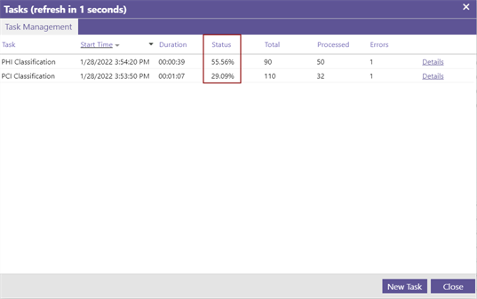

Note: Configuration of
A
|
|
Note: Configuration of |
In
|
|
Note: Autosave is always enabled. With Autosave, all actions performed in the |
Navigate to the
From the EDA Cases overview, search for and select the

In the

In the Location View, you can see all live locations and custodians included in the

If a blue checkbox with check mark is displayed, the location and all of its user accounts are included. If a checkbox with a dash is displayed, specific custodians from this location are included. An empty checkbox indicates that the location, its custodians, and all its data, is not included.

Click on the triangle icon next to a location to expand. This reveals all custodians and subfolders, including the mail folders within a mailbox and root folders.

(Optional) To search for a specific custodian, navigate to the top of the Location View and click Search Custodians.

The Search Custodians overview will open.

From the left panel, you can select the specific locations to search for the custodian(s). In the Filter field, you can enter the name of the custodian(s) and press enter to search. You can search for and select multiple custodians. Select the custodian(s) from the search results and click Apply new selection.

The data of the selected custodian(s) will be displayed in the Document View.
You can manipulate the Document View of the
The column fields that are displayed by default, indicate the type, Name, Owner, Date, Size, and Document ID of each item/document. If the item(s)/document(s) are promoted to a
The definitions of the default column fields are listed in the following table.
|
column field |
Description |
|
Icons |
Displayed on the left-hand side of the Document View, icons indicate if the item/document is an attachment, calendar invite, opened email, unopened email, or if it is a Teams Message, SharePoint Fileshare, and so on. |
|
Name |
The attachment file name, email subject, or title that is automatically generated for an Instant Message. The name is pulled from the contents of the message or the ID of any included attachments. Where applicable, emojis are included. |
|
Owner |
Identifies the sender of the item/document in question. If the item/document is collected for Processing, a custodian will be automatically created and mapped to this field. |
|
Date |
The local day and time the item/document was sent. |
|
Size |
The item/document size, in KB. |
|
Document ID |
The ID value unique to the item/document in question. |
|
|
Tip: The value of the Document ID displayed in |
To adjust the Document View layout, navigate to the top right corner and click the Preferences menu icon  . Make the desired changes from the Prefences drop-down menu. For more information about each available setting, see Setting Preferences.
. Make the desired changes from the Prefences drop-down menu. For more information about each available setting, see Setting Preferences.
To adjust the column width, place the mouse pointer on the column boundary and drag the column boundary to the left or right.
To add columns, hover on any of the column field headings and click on the inverted triangle icon . Add a column by selecting the relevant checkbox in the Columns menu.
. Add a column by selecting the relevant checkbox in the Columns menu.
To change the sort order of a column, hover on any of the column field headings and click on the inverted triangle icon . Sort by Ascending is the default sort order, but you can opt to Sort by Descending.
To change the organization of the items/documents displayed in the Document View, click on a column field heading and drag it across. By default, all items/documents displayed in the Document View are ordered by Date.
|
|
Note: When the column field heading is clicked for the first time, it sorts in Ascending order. When the same column field heading is clicked a second time, it sorts in Descending order. |
Create and perform searches on the live data made available in the
The following steps describe the criteria you can add to modify the scope of the initiated search.
|
|
Note: The following steps are optional methods for modifying the scope of your search. You can complete one step or all, depending on how focused you would like the search to be. The steps are listed in the order of the common workflow scenario. They can, however, be completed in a different order. |
Define an appropriate name for your Search. Right-click the Search tab to rename it.

From the Location View, you can select and deselect the live location(s) and custodian(s) to include in or exclude from your search. Simply check or un-check the box next to the live location(s) or custodian(s).

|
|
Note: By default, when a location is selected, all its custodians are included. |
Search Automatically is enabled by default. To prevent

To search for a specific term or phrase, navigate to the top right corner of the interface, type the expression into the Quick Search bar, and press Enter. The expression will then be added as a search criterion. A search will return a list of all items/documents matching the search criteria. For more information, see Quick Searches.

To perform more complex searches, navigate to the Search menu  in the top right corner of the
in the top right corner of the

For more information about how to perform an Advanced Search, review the following topics in the relevant user guides. Start with Advanced Search, then consult About Groups, About Collections, and About Rules. To learn more about the two key Boolean operators, review About All Of, Any Of.
To quickly refine your search results, filter by item/document type or by live location. Navigate to the bottom-left corner of the Document View and select the relevant icon.

To refine your search results in more detail, apply a filter. Navigate back to the Location View and scroll to the bottom of the view.

Expand the Filter View to apply a wide variety of parameters that make it easy to locate specific data. For more information, see Filter View and Using Search Filters.

To monitor the total number of search results, navigate to the bottom-right corner of the Document View. You can (1) wait until the search results are refreshed or (2) manually refresh the search results.

To erase a search and start a new search in the same Search tab, navigate to the Search menu and select (clear search) from the drop-down menu.
To launch a new search in the same
|
|
Note: The |
With Classification enabled, you can automate the classification of specific
|
|
Note: Reviewers cannot set a Classification Task. |
You can choose from the three available Classification Models:
PCI: Payment Card Information
PHI: Protected Health Information
PII: Personally Identifiable Information
You will select the Classification Model(s) appropriate to your compliance requirements. Keep in mind that you can select multiple models.
Once the Classification task has run on the
|
|
Note: If you have performed Classification and promote the |
Take the following steps to enable Classification in the
Navigate to the top left corner of the interface and select Classification.

To run a new Classification Task, select New Task.

Specify the Search tab(s) to include in the classification. Click the corresponding check box(es). Click Next.

Select the Classification Model(s) to apply: PCI, PHI, or PII. For more information, see Classification Models.

Choose the Classification mode:
Select Full Classification mode if you are classifying data for the first time.
|
|
Note: Full Classification mode is most often used in conjunction with the One time only schedule frequency option. It is suggested that you run a full classification before creating an incremental Classification Task scheduled on a regular basis. |
Select Incremental mode to classify data on an ongoing basis. This classifies only new data or data that has not been classified since the last time a Classification Task was run.
|
|
Note: Incremental mode is most often used in conjunction with the Continuous schedule frequency option. This allows you to classify new data, on an ongoing basis, as soon as it is detected in any of the locations and repositories selected in the classification. |
Set the Schedule:
Select One time only to run the Classification Task only once.
|
|
Note: The One time only option is most often used in conjunction with Full Classification mode, as shown above. |
Select Every X minutes/days to specify a classification schedule best suited to your needs.
Select Continuous to classify data on an ongoing basis, as soon as it is detected in any of the locations and repositories included in the classification.
|
|
Note: The Continuous option is most often used in conjunction with Incremental mode, as shown above. |
Click Next.
Specify the Classification Task details.
Enter a Task Name.
To receive a report when the Classification Task is completed, check the box. Enter the email address of the person who should receive the report. By default, the email address of the Classification Task creator is used.

Click Create. The Classification Task can now run.
The Task Management overview will open. Here you can view the Classification Task progress and review the Classification Task settings.
Progress is indicated by the percentage displayed under Status.

|
|
Note: To open the Task Management overview, navigate to the top left corner of the interface and select Classification > Task Management. |
(Optional) Double-click on the Classification Task to view the Task Details.

(Optional) Open the Executions Report tab to view the details of executed Classification Tasks.

When the Classification Task has run, Classification Scores are applied to the data in your
To view the Classification Scores:
Add the relevant Classification Model column to the Document Overview. Right-click on any of the available column headings and select PCI.

Click on the inverted triangle to (re)order the results by ascending or descending.

(Optional) Perform filtered searches on the classified data.
Navigate to the Search menu and select a Search type.
Open the Tags tab. From the drop-down menu, select the Model Name.
Set the Confidence Score Range. A low range will cast the widest net.

|
|
Note: Remember that with a range that starts too low, you’ll get higher false positives, and with a range that starts too high, you'll risk missing results. For more information about how to fine-tune the Confidence Score Range, see Confidence Score Range. |
You can save the search criteria in a Search tab as template. This allows you to easily replicate the search in another tab, or in another
Take the following steps to save the search criteria as template.
Right-click on the first Search tab of the

Give the template a meaningful name. 
You can save the
As Template: Save the template for use within your
As File: Save the template for use outside of your

(Optional) Select Template for All if you would like the template to be made available to other users and in other

Click Save.
Take the following steps to load the search criteria saved as template.
(Optional) Re-name the Search tab in which you will load the template. It is a best practice to give the Search tab a name similar to the name of the search template you are intending to use.
Right-click on the first Search tab in which you would like to Load As Template.

Select a previously saved Search Template — this is either one that you have created or one that has been made available to you.
From Template: Select one of the available Search Templates from the drop-down menu.

From File: Select Choose File to load a saved Search Template.

Click Apply. This applies the search criteria to the selected locations and populates the results in the Search tab.
When you have created a Search tab and performed the search, you can preview the search results. All
The actions outlined in the following steps can also be performed on multiple search results. You can select more than one from the list in Document View, or navigate to the Selections menu in the top left corner of the Document View and opt to Select All.
|
|
Note: The following steps are optional methods for modifying the scope of your search. You can complete one step or all, depending on how focused you would like the search to be. The steps are listed in the order of the common workflow scenario. They can, however, be completed in a different order. |
Double-click any item/document to open the Preview. For more information about how to preview individual search results, see Previewing Documents.
By default, the Properties tab displays first. Here, you can view the metadata of the item/document previewed. For more information, see Properties Tab.
Open the Preview tab to view the body or content of the item/document previewed. The content immediately displayed in the Preview tab differs according to item/document type. For attachments, the first two pages are displayed. You can click the link to view all. For emails, the message directly corresponding to the search criteria is displayed first. You can scroll down to read the thread. For Instant Messages, the message directly corresponding to the search criteria is displayed.

If you are previewing an Instant Message and would like to view it in context of the full conversation, open the Conversation tab. This tab displays the complete chat history accompanying the search result.

If you are previewing an Archived item/document and would like to view all audit actions performed on the item/document in question, open the Audit tab. This tab displays when the Archived item/document was first Created by the Archive agent, if it has been Exported by an ILM/Export job, and/or if it has been Viewed or Printed by an

To see whether any tags or comments have already been applied to the item/document, open the Tags tab. 
In
The actions outlined in the following steps can also be performed on multiple search results. You can select more than one from the list in Document View, or navigate to the Selections menu in the top left corner of the Document View and opt to Select All.
|
|
Note: The following steps are optional methods for managing tags in |
The tags Promote Candidate and Privileged are available by default. To add a custom tag to the
Navigate to Manage Tags in the Case Overview toolbar.
In Manage Tags, select Add New Tag. Enter the new tag name and click Save. The tag can then be applied to a selected item/document.
To remove a custom tag from the
Navigate to Manage Tags in the Case Overview toolbar.
Select the tag from the list of available tags and click Remove selected Tag(s).
To apply an existing tag to an item/document, complete the following steps:
If still in Preview mode, close the Preview. In Document View, select the check box of the item/document to which you would like to apply a tag.
Navigate to the bottom-right panel of the Documentation View. Click an available tag to apply it to the selected item/document. 
To remove a tag previously applied to an item/document, complete the following steps:
If still in Preview mode, close the Preview. In Document View, select the check box of the item/document from which you would like to delete the applied tag.
Navigate to the bottom-right panel of the Documentation View. Click Remove Tag. 
To see which tags have been applied to an item/document, double-click the item/document in question to Preview, and navigate to the Tags tab.
To run a report on all items/documents tagged in the

In
|
|
Warning: Once they have been added, comments cannot be removed. |
The actions outlined in the following steps can also be performed on multiple search results. You can select more than one from the list in Document View, or navigate to the Selections menu in the top left corner of the Document View and opt to Select All.
To add a comment to an item/document, complete the following steps:
Select the item/document from the Document View.
Navigate to the Comment field in the bottom-left corner of the Document View.
Type in the comment and press Enter or click on the Add Comment icon  to commit.
to commit.

The applied comment will remain available in the Comment field. If you want to add this same comment to another item/document, simply select the relevant item/document and click the Add Comment icon to commit.
Comments cannot be deleted, but you can apply multiple comments to the same item/document by repeating the steps outlined.
To see what comments have been applied to an item/document, double-click the item/document in question to Preview and navigate to the Tags tab.
You can apply a Legal Hold to a
It is a best practice to create a
|
|
Note: Reviewers cannot set a Legal Hold. |
Take the following steps to enable a Legal Hold for Live Content.
Create a
As part of this step, ensure that you have selected at least one live location (i.e., Gmail, MS Teams, SharePoint, or Slack).
Perform a Federated Search to set the scope that you want the Legal Hold to cover. All items/documents meeting any of the Federated Search criteria set, will be placed under Legal Hold. For more information, see Federated Searches.
|
|
Note: If you would like to limit the scope of your Legal Hold by date, you must do so by selecting the relevant dates in your Federated Search. If your Federated Search does not include a date filter, all live content in the selected location(s) will be placed on Legal Hold. |
Navigate to the top left corner of the interface and select Legal Hold.

Select Enable Legal Hold for Live Content.

Set the Scope of the Legal Hold. Select the relevant Search tab from the drop-down menu. The scope of the Legal Hold will be limited to the parameters of the Federated Search performed in the Search tab.
Select the Location where the
Click Save. Clicking Save will prompt a notification detailing the implications of applying the Legal Hold.
[SCREENSHOT]
Click OK. You can view the progress of the Legal Hold.
When you see a Completed status, the Live Legal Hold has been placed.
The Live Legal Hold is applied to your
|
|
Warning: It is not recommended that you disable Legal Hold. If you do decide to disable the Live Legal Hold, uncheck the Enable Legal Hold for Live Content option. You can then make changes to the Legal Hold scope. Edit the criteria entered in your Federated Search and re-apply the Live Legal Hold. |
Case Administrators can enable the Case Scope function to ensure that visibility is limited to search results of a specific search. With Case Scope enabled, only the search result items/documents are available to those working in the
|
|
Note: The Case Scope function must be applied to the first Search tab of the |
Take the following steps to enable Case Scope in the
Right-click on the first Search tab and select Set Case Scope.

The Case Scope banner will display.
The Search tab(s) to which you applied Case Scope will be renamed Case Scope. If you applied Case Scope in a Legal Hold case, the Search tab(s) will be renamed LegalHold Scope.

|
|
Note: If you have set a LegalHold Scope on your |
When satisfied with your search, you can promote your search results and relevant data set to the
Related Topics